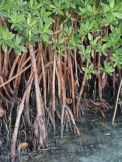

Parques Nacionales Naturales de Colombia
Catálogo de Restauración Ecológica
Parque Nacional Natural Gorgona
Código: PNN-GOR
Categoría: Parque Nacional Natural
Región: Dirección Territorial Pacifico
Departamento: Cauca
Municipio(s): Guapi
Área protegida insular del Pacífico colombiano con ecosistemas marinos y terrestres de alto valor ecológico. Desarrolla procesos de conservación, restauración ecológica continental y restauración coralina, orientados a la recuperación de la biodiversidad y al fortalecimiento de la resiliencia de los ecosistemas.
Número de especies registradas: 1
Fecha de generación: 6/7/2026
Índice de especies

Mangle rojo
Nombre científico: Rhizophora mangle
Familia: Rhizophoraceae
Categoría: Flora
Ecosistema: Manglar
Estado de conservación: Preocupación Menor (LC)
Método de propagación: Propágulos (reproducción vegetativa y sexual) prueba
Descripción
Árbol característico de los manglares del Pacífico colombiano, con raíces fúlcreas que estabilizan los suelos costeros y favorecen la acumulación de sedimentos.
Hábitat
Manglares, estuarios y zonas intermareales tropicales.
Distribución
Costas del Pacífico y Caribe colombiano; ampliamente distribuido en América tropical.
Floración
Durante gran parte del año, con variaciones regionales
Fructificación
Durante gran parte del año; produce propágulos vivíparos.
Importancia ecológica
Protege la línea costera, reduce la erosión, captura carbono, sirve de refugio y zona de reproducción para peces, crustáceos y aves.
Uso en restauración
Especie clave para proyectos de restauración de manglares y recuperación de ecosistemas costeros degradados.
Recomendaciones
Utilizar propágulos provenientes de poblaciones locales, mantener el régimen hidrológico natural y evitar alteraciones en el flujo de mareas.
Observaciones
Es una de las especies prioritarias para programas de restauración ecológica en áreas marino-costeras del Parque Nacional Natural Gorgona.
Experiencias de propagación
experiencia 1
Año: 2026
Ubicación: PNN GORGONA
Vivero: GORGONA
Responsable: EQUIPO DE TRABAJO
Objetivo:
POBLAR ZONAS NECESARIAS PARA EL INTERCAMBIO GASEOSO DE LAS AGUAS
Metodología:
ASI MISMO SE HIZO
Resultados:
MUY BUENOS
Lecciones aprendidas:
TODAS
Observaciones:
HAY QUE SEGUIR
Referencias bibliográficas
ERERRET
Autores: FRFRGCR
Año: 2017
Fuente: PNN
URL: NO EXISTE
SEGUIR